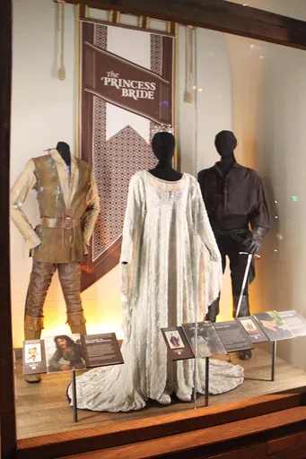
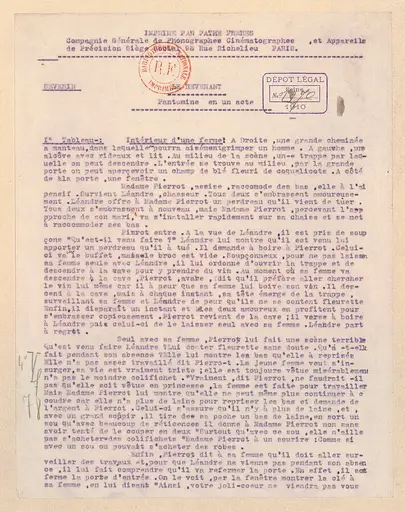
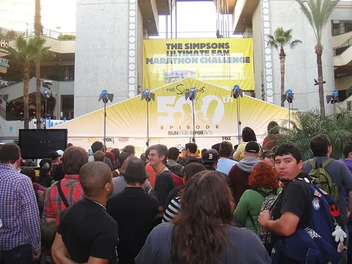
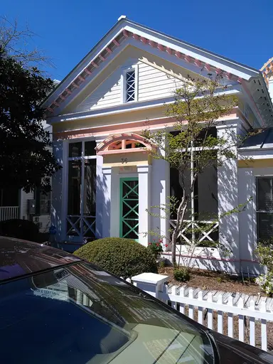
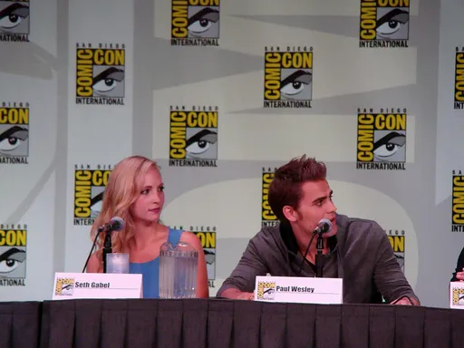
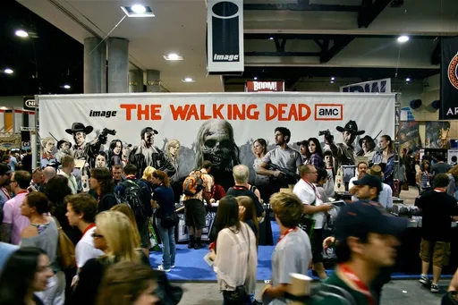
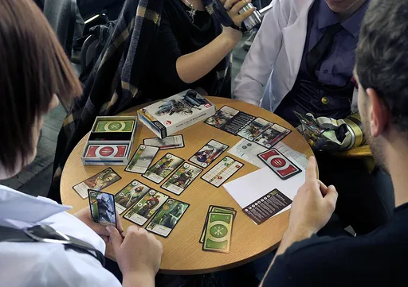
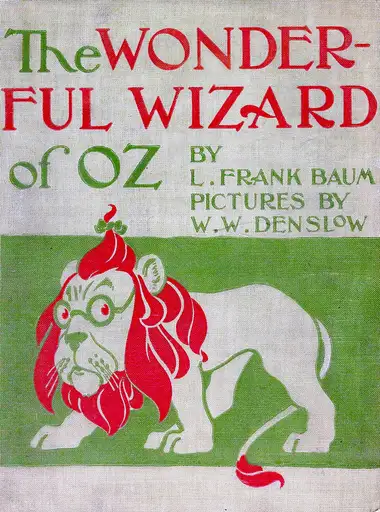
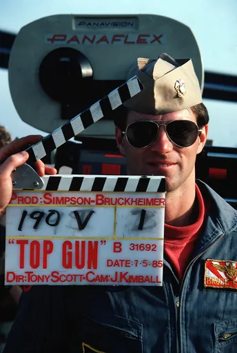

Reject an image by adding its slug to public/charades/charades-movies/reject.txt (append ! to keep it word-only), then re-run node scripts/genimages.mjs.
The Polar Express the-polar-express CC BY 3.0 · Begnaud · source

The Princess Bride the-princess-bride CC BY 2.0 · Theresa Arzadon-Labajo · source

The Revenant the-revenant Public domain · Bibliothèque nationale de France · source

The Simpsons the-simpsons CC BY 2.0 · The Conmunity - Pop Culture Geek from Los Angeles, CA, USA · sourceThe Sound of Music the-sound-of-music Public domain · Toni Frissell / Adam Cuerden · source

The Truman Show the-truman-show CC BY-SA 4.0 · Jakesilb14 · source

The Vampire Diaries the-vampire-diaries CC BY 2.0 · vagueonthehow from Tadcaster, York, England · source

The Walking Dead the-walking-dead CC BY 2.0 · Daniel Means · source

The Witcher the-witcher CC BY-SA 4.0 · Klapi · source

The Wizard of Oz the-wizard-of-oz Public domain · W. W. Denslow · sourceTitanic titanic Public domain · Francis Godolphin Osbourne Stuart · source

Top Gun top-gun Public domain · PH2 Michael D.P. Flynn, U.S. Navy · source
Up in the Air up-in-the-air Public Domain Mark · comedy_nose · sourceVenom venom CC BY-SA 3.0 · Jonas Rogowski · sourceWALL-E wall-e Public Domain Mark · MassDOT · source